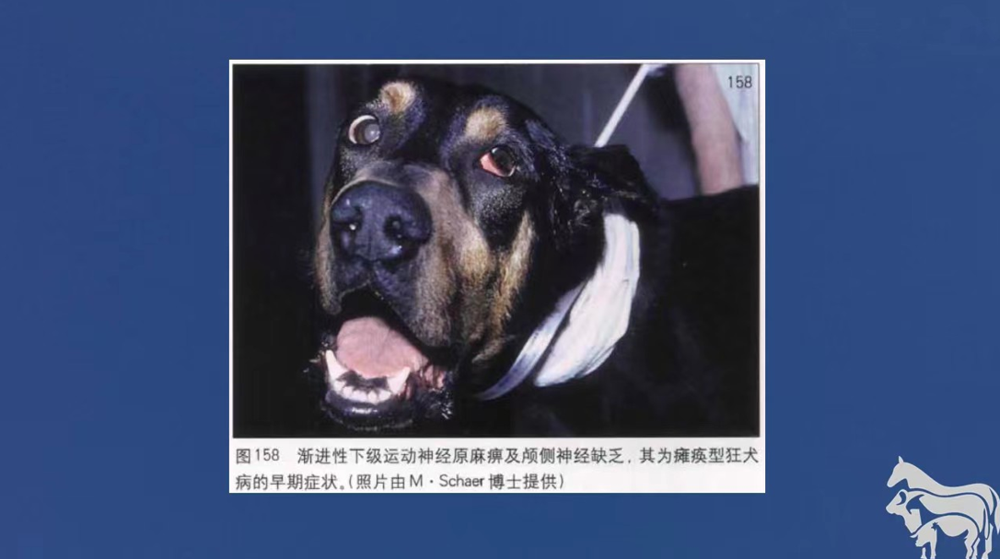

病原：狂犬病病毒是一种单股负链RNA病毒，病毒粒子成圆柱体，底部扁平，另一端顿圆，壳衣由单股RNA及五种蛋白质组成，其中糖蛋白是RV的主要保护性抗原 流行病学：狂犬病对所有温血动物均易感，其中野生犬科动物，浣熊，蝙蝠及牛最易感，其次为犬，猫，马，绵羊，山羊及人等，狂犬病毒主要存在于脑组织，在发病期间，唾液腺和唾液中，也有大量病毒 症状：犬感染狂犬病毒后，潜伏期一般为2～8周，长的可达数月至数年，短的仅有一周，犬患病时常改变习性病处常有逃跑或躲避趋势，故也将狂犬病称为逃跑病，病犬可能失踪数天后归来，此时体重减轻，满身污泥，皮毛上可能带有血迹，病犬行为凶猛，间或神志清楚，重新认识主人，拒食或出现贪婪性狂食现象，并且最后呼吸麻痹或衰竭而死 预防：临床症状明显的犬无法治愈，应予安乐死，对疑有狂犬病的犬应进行严格隔离，以防与其他动物或人接触，必要时对其进行安乐死并取脑组织进行狂犬病病毒检查，犬等动物对该病的预防主要是疫苗接种 |
实例症状 |
|  |